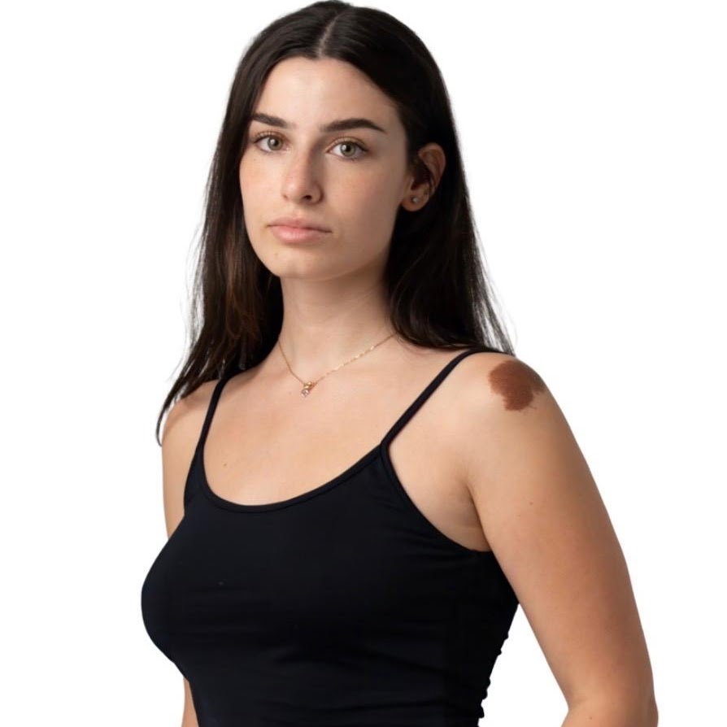

Estar en clase no siempre significa implicarse
Una clase pasiva puede hacer que el alumnado esté presente sin sentirse parte de lo que ocurre.
Responde, colabora y compite en minijuegos educativos. Cada participación suma. Cada clase puede cambiar el ranking.
Estudiantes y profesorado comparten el mismo desafío: favorecer la participación, reducir el absentismo y prepararnos para trabajar en equipo en contextos profesionales.
El absentismo tiene causas diversas. Este proyecto se centra en el desinterés que pueden generar las clases poco dinámicas, demasiado teóricas o percibidas como de escaso valor añadido.
Show up no busca obligar a asistir: busca crear más motivos para querer estar, participar y sentirse parte del aula.
Una clase pasiva puede hacer que el alumnado esté presente sin sentirse parte de lo que ocurre.
Equipos con identidad propia, minijuegos educativos y un ranking compartido convierten el repaso en una experiencia activa.
Queremos clases vivas donde participar, colaborar y aportar al equipo sea una razón para volver.
Conoce el reto, la idea y cómo una clase puede convertirse en una experiencia de equipo.
No hace falta aprender un sistema complejo. Entras con el código de la clase y la partida te guía.
Usa el código que comparte el profesor.
Crea un nombre, un color y un emblema.
Los aciertos y la rapidez mueven el ranking.
La demo incluye actividades que pueden configurarse con el contenido de cualquier asignatura.
Probar la partida completa ↗Vota letras con tu equipo y completa el concepto antes de agotar los intentos.
Cada integrante vota. La opción más elegida se convierte en la respuesta del equipo.
Encuentra conceptos en la misma cuadrícula y acelera el progreso colectivo.
Conecta pistas y conocimientos para completar el tablero antes de que termine el tiempo.
La propuesta contempla el aprendizaje, la integración social, la sostenibilidad digital y las circunstancias que existen fuera del aula.
Los retos por equipos pueden hacer las clases más dinámicas, facilitar el repaso y entrenar comunicación, cooperación y trabajo en equipo. La identidad compartida busca reforzar la integración y la pertenencia a la universidad.
Una versión real debería ser ligera, consumir pocos recursos, evitar animaciones y vídeos innecesariamente pesados, funcionar en dispositivos antiguos y contratar infraestructura alimentada con energía renovable cuando sea posible.
El transporte, el clima o los problemas personales pueden impedir asistir a una sesión. Una clasificación competitiva no debe confundir estas circunstancias con falta de interés ni perjudicar injustamente al estudiante.
La aplicación busca que el alumnado se sienta más seguro e integrado. Como evolución futura, podrían existir actividades de recuperación o nuevas oportunidades de sumar puntos sin alterar injustamente el ranking.
Show up combina tecnología disponible con una dinámica educativa diferente. El valor está en cómo se conectan juego, equipo y aprendizaje.
La propuesta utiliza tecnologías web actuales y accesibles. Su innovación está en combinarlas para crear una nueva dinámica de aula, sin exigir grandes inversiones iniciales para poner en marcha una primera prueba.
Utilizamos herramientas de IA para analizar la frecuencia de la problemática actual y apoyar la creación de contenidos y de esta página web. Las decisiones finales, el enfoque y la propuesta son responsabilidad del equipo.
Cuatro perfiles diferentes, un mismo reto y muchas decisiones tomadas en equipo.
Community Manager
BAIM · 1.er año
Cronometradora
ADE + Turismo · 1.er añoProductor
Ingeniería Informática + Videojuegos · 5.º añoCuidador
Máster en Emprendimiento e InnovaciónEntra como estudiante o profesor y recorre una sesión completa de Show up.
Empezar partida ↗ Modo demostración · Sin registro real · Los participantes son simulados